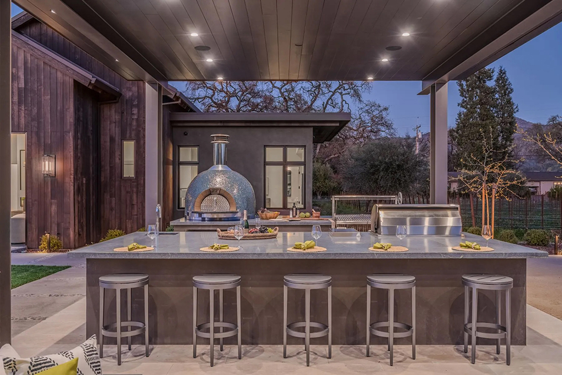
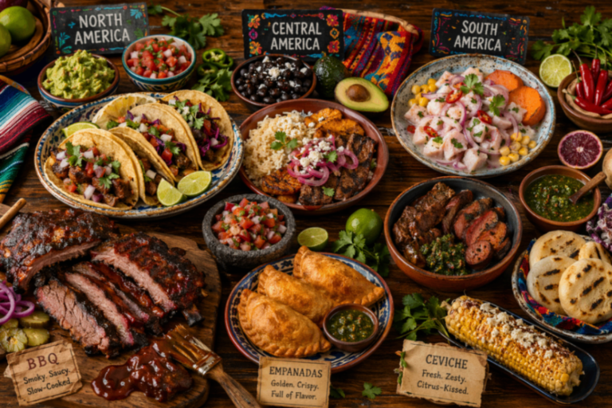
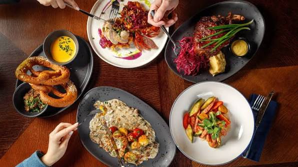
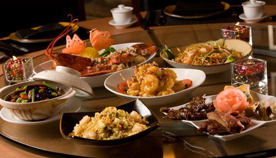
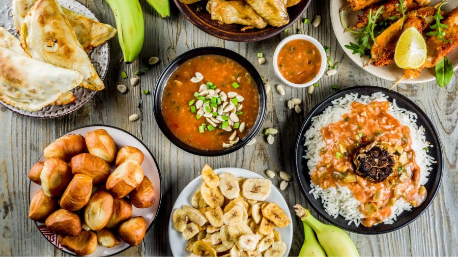
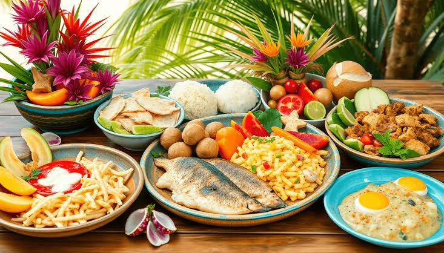

Welcome!

Here at Global Cooking Co. we pride ourselves on spreading the art of global cuisine! Become an expert chef on foods from all around the world, perfect for recreating at home.
What we have to offer:
All classes have Individual (teaches & feeds 1 -- $75), Couple (teaches & feeds 2 -- $115), and Family (teaches & feeds 3-6 -- $200) class options.
The Americas

- Immigrant-fused: Cuisines deeply reshaped by centuries of global migration, heavily blending global culinary traditions with indigenous roots.
- Ingredient Driven: Fresh, local produce and crops like potatoes and corn with less heavy processing.
- Regionally Diverse: Varies from New England seafood, to soul food, to vibrant flavors of South America
Tour of Europe

- Meat-Centric: Roasts, steaks, cutlets, and sausages.
- Wheat and Root-based: Wheat-flour products like bread pastries and dumplings, as well as root veggies like potatoes.
- Dairy and Sauce-Heavy: Cheese, butter, sauces, and oils are very popular in european cuisine.
Asian Meals

- Diverse: delicate, seasonal raw preparations of Japanese cuisine, to heavily spiced curries of the Indian subcontinent.
- Aromatic: Vibrant foundation of fresh herbs, roots, and spices to create deep, lingering fragrences.
- Balanced: Masterfully balancing contrastin elements like sweet, sout, salty, bitter, and spicy, while maximizing umami.
African Cuisine

- Hearty: Nutrient-dense, comforting, and filling starches.
- Boldly Spiced and Aromatic: Utilized complex, multi-layered spice blends and fiery confments to build deep flavors.
- Comfort-Driven: Deeply tied to cultural traditions of sharing and hospitality, characterized by slow-cooked, ne-pot meals.
Tour of Oceania

- Marine-centric: Fresh seafood serves as the primary protein source and foundational cornerstone of daily diet across the region.
- Earth-cooked: Use of the Earth Oven. This slow-coking method uses hot volcanic stones buried underground to steam meats and root vegetables.
- Starchy and Tropical: Hearty, corbohydrate-rich root crops and starches.